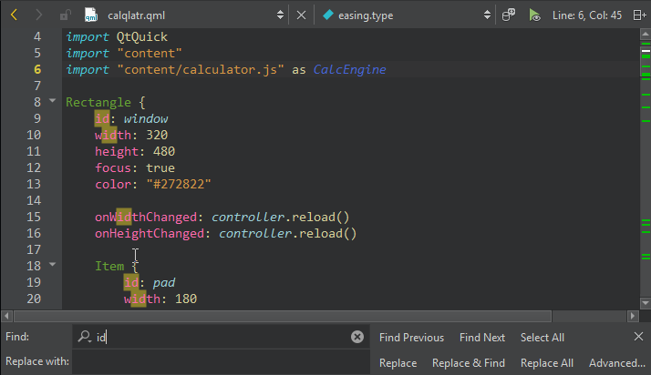

Search in current file
The incremental search highlights the matching strings in the editor while you type.
To search through the currently open file:
- Press Ctrl+F or go to Edit > Find/Replace > Find/Replace.
- In Find, enter the text you are looking for.

All occurrences of the text are highlighted in the editor as you type.
- To go to the next occurrence, select
 (Find Next), or press F3.
(Find Next), or press F3. - To go to the previous occurrence, select
 (Find Previous), or press Shift+F3.
(Find Previous), or press Shift+F3. - To select all found occurrences in a file, select Select All.
Note: Select text before selecting Find/Replace to search only from the selection.
Set search criteria
To restrict the search in the Find box, select  and set search criteria:
and set search criteria:
- To make your search case sensitive, select Case Sensitive.
- To search only whole words, select Whole Words Only.
- To search using regular expressions, select Use Regular Expressions. Regular expressions used in Qt Creator are modeled on Perl regular expressions
Replace text
To replace occurrences of the existing text, enter the new text in Replace with.
- To replace the selected occurrence, select Replace.
- To replace the selected occurrence and move to the next one, select Replace & Find.
- To replace all occurrences in the file, select Replace All.
Preserve case when replacing
To preserve the case of the original text when replacing, select  and then select Preserve Case when Replacing. You cannot use this option together with Use Regular Expressions.
and then select Preserve Case when Replacing. You cannot use this option together with Use Regular Expressions.
The case of the of the occurrence is preserved according to the following rules:
- All upper-case occurrences are replaced with the upper-case new text.
- All lower-case occurrences are replaced with the lower-case new text.
- Capitalized occurrences are replaced with the capitalized new text.
- Other occurrences are replaced with the new text as entered.
- If an occurrence and the new text have the same prefix or suffix, the case of the prefix and suffix are preserved, and the other rules are applied to the rest of the occurrence.
Highlight search hits
The locations of search hits, breakpoints, and bookmarks in your document are highlighted on the editor scroll bar. To turn highlighting off, select Preferences > Text Editor > Display > Highlight search results on the scrollbar.

Search globally
Select Advanced to open the Search Results view where you can search in currently open projects or files on the file system. Or, search for symbols to refactor code.
See also How To: Search and Search Results View.